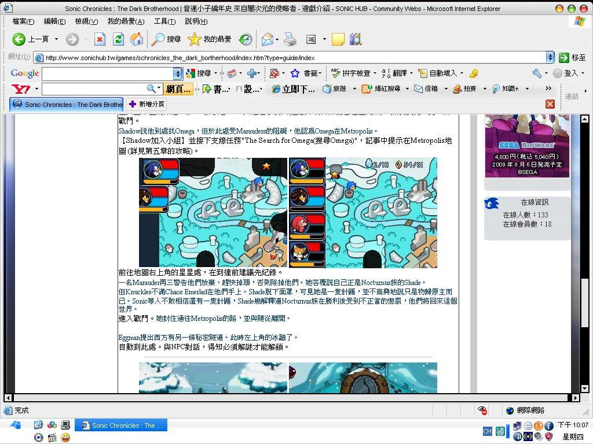

🏠 首頁
📁 網站建議區
SC:TDB遊戲攻略錯字
👤 sonic2358
🕐 2009-04-26 03:48:35
剛剛發現SC:TDB中遊戲攻略第10章有錯字，就是之後得到第7顆CE的字打錯了，你們把顆打成\"科\"了，我好像特別在意小細節?[:egg4:]
👤 darkspinesonic4
🕐 2009-05-14 14:11:01
看來我是第二個....

附件: 77.JPG
圖可能有點小.....
第四章也有，如下
CHAOS EMERALD變成CHAOS EMER
LAD
了
[
本文最後由 darkspinesonic4 於 2009/5/14 10:13 PM 編輯
]